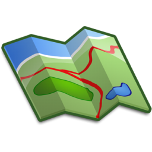

<!--
OpenLayers is a Javascript library that handles the visual part of GIS systems.
It's a way to add maps into web applications.
OpenLayers consists from more overlaped layers.
You can display maps from different sources such as Bing, GoogleMaps or your own Geo server.
Using projections you can convert locations on earth to locations on maps.
ex. EPSG 3857, EPSG 4326
API DOCS OL 3.x http://geoadmin.github.io/ol3/apidoc/ol.html
-->
<!DOCTYPE html>
<html>
<head>
<title></title>
<style>
/*
* Select HTML element where the map will be displayed,
* if width and height aren't specified map will be 0x0
*/
#myMap{
height: 600px;
width: 600px;
border: 5px solid black;
}
</style>
<script src="https://cdnjs.cloudflare.com/ajax/libs/ol3/3.20.1/ol.js" type="text/javascript"></script>
<link rel="stylesheet" href="https://cdnjs.cloudflare.com/ajax/libs/ol3/3.20.1/ol.css" />
</head>
<body>
<div id="myMap">
<!-- this is where map will be rendered -->
</div>
<script>
/* ********************************* START Layers Description *******************************
* There are 3 types of layers ol.layer.Tile, ol.layer.Image, ol.layer.Vector.
* The main difference between Tile and Image is the type of server that provides the map,
* usually Image servers have better quality and require a lot of configuration to make.
* Both Image and Tile layers are raster format.
* In its simplest form, a raster consists of a matrix of cells (or pixels) organized into rows and columns
* (or a grid) where each cell contains a value representing information, such as temperature.
* Rasters are digital aerial photographs, imagery from satellites, digital pictures, or even scanned maps.
* ********************************* END Layers Description *********************************
*/ //define map layer
var myLayer = new ol.layer.Tile({ //define layer type
source: new ol.source.OSM() //define layer source, there are many sources to choose from
//more properties here: http://geoadmin.github.io/ol3/apidoc/ol.layer.Tile.html
});
/*********************************** START Mall Feature ***********************************/
//1. define mall coordinates
var mallCoords = [28.646895, 44.178516];
//2. define mall Point with given coordinates
var mallPoint = new ol.geom.Point(ol.proj.transform(mallCoords, 'EPSG:4326', 'EPSG:3857'));
//4. style the feature (optional)
var stroke = new ol.style.Stroke({color:'black', width: 2});
var fill = new ol.style.Fill({color: 'gold'});
var square = new ol.style.Style({
image: new ol.style.RegularShape({
fill: fill,
stroke: stroke,
points: 4,
radius: 10,
angle: Math.PI / 4 // <----45 degrees, PI = 180 degrees
})
});
//3. define mall feature for given point
var mallFeature = new ol.Feature({
geometry: mallPoint
});
mallFeature.setId('Tomis Mall');
mallFeature.setStyle(square);
/*********************************** END Mall Feature ***********************************/
/*********************************** START Maritimo Feature ***********************************/
//1. define mall feature for given point
var maritimoFeature = new ol.Feature({
geometry: new ol.geom.Point(ol.proj.transform([28.609385, 44.199066], 'EPSG:4326', 'EPSG:3857'))
});
//2. define maritimo style
var maritimoStyle = new ol.style.Style({
image: new ol.style.Icon({
src: 'https://www.shareicon.net/data/128x128/2017/07/13/888379_business_512x512.png',
scale: 0.4
})
})
maritimoFeature.setId('Maritimo Mall');
maritimoFeature.setStyle(maritimoStyle); //style from Tomis Mall Feature
/*********************************** END Maritimo Feature ***********************************/
/***************************** START Custom Features Layer ******************************/
//1. define vector source with given features
var mallVectorSource = new ol.source.Vector({
features: [mallFeature, maritimoFeature]
});
//2. define mall layer with given source
var mallLayer = new ol.layer.Vector({
source: mallVectorSource,
maxResolution: 6 //6m per pixel, only show layer if zoom is high, resolution is related to zoom
});
/****************************** END Custom Features Layer *******************************/
/***************************** START KML Custom Layer ************************************/
//1. define vector source with kml information
var kSource = new ol.source.Vector({
url: 'https://openlayers.org/en/v4.5.0/examples/data/kml/2012-02-10.kml',
format: new ol.format.KML()
});
//2. define mall layer with given source
var kLayer = new ol.layer.Vector({
source: kSource
});
/****************************** END KML Custom Layer ************************************/
//define layer array
var myLayers = [myLayer, mallLayer, kLayer];
//coordinates
var centerCoords = [28.6516268, 44.1767841];
//transform coordinates from 4326(took from Google Maps) in 3857(Standard OpenLayers)
var transCoords = ol.proj.transform(centerCoords, 'EPSG:4326', 'EPSG:3857');
//define view using center coordinates(transformed)
var myView = new ol.View({
center: transCoords,
zoom: 18 //min 0, max 28.
//projection: 'EPSG:4326', //You can use this to skip transformation
//more properties here: http://openlayers.org/en/latest/apidoc/ol.View.html
});
//define map
var map = new ol.Map({
target: 'myMap', //id to element where to render map
layers: myLayers, //specify layers
view: myView //specify view
});
//add event handler on map for each feature
map.on('click', function(evt){
map.forEachFeatureAtPixel(evt.pixel, function(feature, layer){
alert(feature.getId());
})
}) </script>
</body>
</html>
<!-- ********************************* START Vector Formats Description *******************************
* The most common Vector formats are GML, KML, GeoJSON and ESRI Shapefile.
* Some examples with code here: http://openlayers.org/en/latest/examples/geojson.html
************************************** END Vector Formats Description *********************************-->